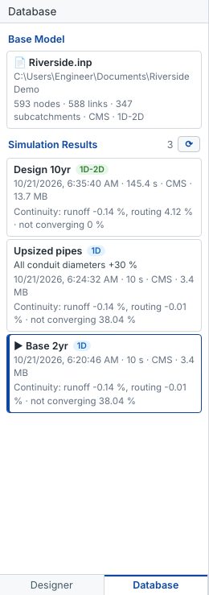
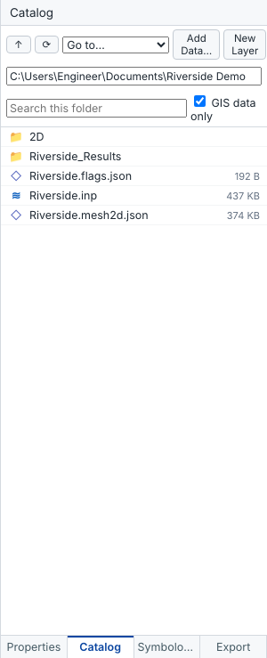
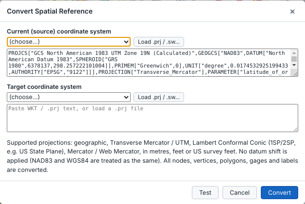
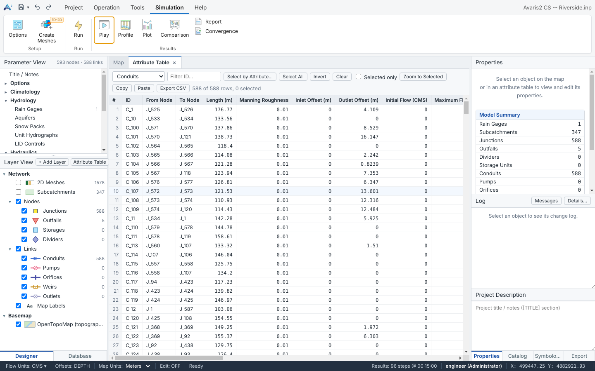
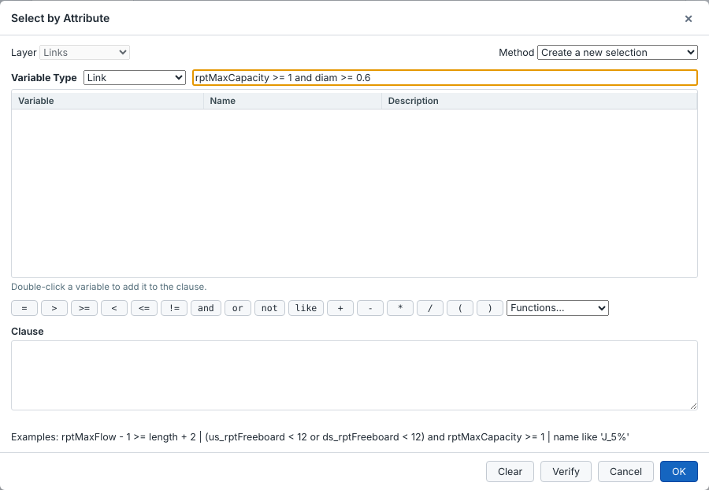
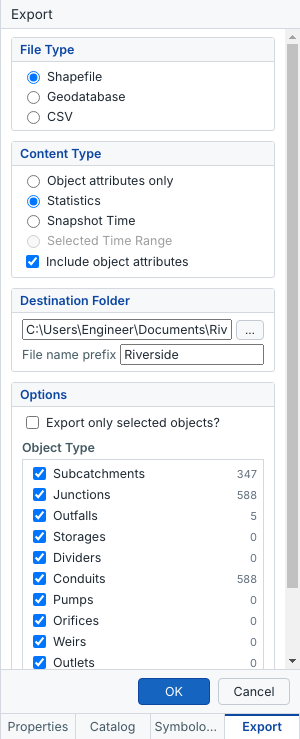
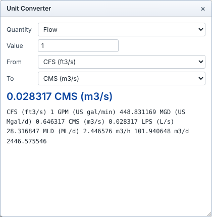

An Avaris2 CS model is an .inp file in the EPA SWMM 5 format. Avaris2 CS opens models written by EPA SWMM 5.x, Avaris CS, Avaris DS and other programs that use this format, and saves them so that these programs can still read them.
| Command | Where | What it does |
|---|---|---|
| New | Project ▸ File ▸ New, Ctrl+N | Starts an empty model with the default options and units. |
| Open | Project ▸ File ▸ Open, Ctrl+O | Opens an .inp file. Large files are read in the background with a progress bar. |
| Save / Save As | Quick-access toolbar, Ctrl+S, Ctrl+Shift+S | Writes the .inp and the files that go with it. |
| Close | Project ▸ File ▸ Close | Closes the model. If there are unsaved changes, you are asked whether to save them. |
To stay compatible with other programs, Avaris2 CS never writes unknown sections into the .inp file. It stores its extra information in comment lines starting with ;;@OSEM, which other programs ignore, or in files next to the model:
| File | Contents |
|---|---|
Model.inp | The model. |
Model.prj | The coordinate system of the map. It takes priority over the Avaris DS project file. |
Model.ini | The Avaris DS project file: coordinate system, layers and 2D settings. Avaris2 CS reads it when you open a model created in Avaris DS. |
Model.flags.json | Flag panel settings: parameters, colours and custom flags. |
Model.mesh2d.json | The 2D surface mesh. |
Model.osemhist.json | The change history. |
Model_Results\ | One set of files per simulation run: .inp, .rpt (status report), .out (binary results) and .json (run summary). 1D-2D runs use .finp, .frpt and .fout. |
Copy or archive the whole model folder rather than the .inp file alone, so the coordinate system, flags, mesh, history and results move with the model.
The Database tab, at the bottom of the left pane, lists the base model and every simulation run made from it, with its date, run time, units and continuity errors.

In Avaris2 CS a scenario is a named run of the model. Each run keeps its own results, so you can change the model, run it under a new name and compare the runs at any time.
Open Simulation ▸ Analysis ▸ Comparison and choose the two runs in Base and Compare; see Scenario comparison. While the comparison is open, graph windows show exactly these two runs.
Write a short description for each run in the Run dialog (for example pipes 30 % larger in Main Street). It is shown in the Database pane and helps you remember what changed.
To keep a variant of the model itself (not only its results), save a copy with Save As before you change it. Versions before 2.6.8 had a separate Scenarios panel on the Project tab; it was replaced by named runs and the Comparison view.
The Catalog pane (Project ▸ Import, or the Catalog tab on the right) works like the ArcGIS Pro Catalog. Browse folders, then double-click a file or drag it onto the map to add it as a layer.

| Type | Formats |
|---|---|
| Vector | Shapefile (also zipped), GeoJSON, KML/KMZ, GPX, DXF, CSV/TXT with X/Y columns, Esri File Geodatabase feature classes. |
| Raster | GeoTIFF, images with a world file, ESRI ASCII grid. |
Layers with a .prj file, or with a coordinate system stored inside the file, are reprojected to the map's coordinate system as they are added.
To turn GIS features into model objects, right-click an added layer and choose Import into Network…, or use Project ▸ Import.
You map the GIS fields to model fields (ID, invert, rim, diameter, roughness, outlet…). Common field names are recognised automatically.
A model needs a coordinate system before Avaris2 CS can draw an online basemap under it or reproject GIS layers onto it.
.prj file.Model.prj.Supported projections are geographic coordinates, Transverse Mercator (UTM and State Plane TM zones), Lambert Conformal Conic with one or two standard parallels, Hotine Oblique Mercator (variants A and B), Mercator and Web Mercator. Units can be metres, feet or US survey feet, in WKT1 (ESRI .prj) or WKT2 format.
The most common cause is a .prj file that does not belong to the model, for example a UTM zone attached to a State Plane model. Open the coordinate system dialog, check the lat/lon of the model centre, and choose the correct system.
Right-click the Basemap layer to choose OpenTopoMap or OpenStreetMap; double-click it to set its transparency in Symbology. Map tiles are downloaded while you work and kept in a cache on your computer, so areas you have viewed also show without internet.
To prepare for working offline, for example on site, right-click the Basemap layer and choose Download for Offline Use…. Pick the level of detail; the dialog shows how many tiles that takes. The tiles covering the model area and a margin around it are then saved. Cached tiles are refreshed after 30 days when you are online.
Tools ▸ Spatial Reference ▸ Convert Coordinates converts every node, vertex, polygon and rain gage from one coordinate system to another, for example from a local grid to State Plane. Use Test to check a point before converting. No datum shift is applied: NAD83 and WGS84 are treated as the same.

An attribute table shows every object of one layer in a grid: network objects (junctions, conduits, subcatchments…), 2D mesh cells, or the features of an added GIS layer such as a Shapefile, GeoJSON, KML or File Geodatabase layer.

Edits to an added GIS layer change it in memory only. Right-click the layer and choose Export as Shapefile… to save them.
Select by Attribute selects the objects that match a condition written in the expression language, for example:
rptMaxCapacity >= 1 and diam >= 0.6
type = 'CONDUIT' and slope < 0.1
name like 'J_5%'
Choose Create a new selection, Add to current selection, Remove from current selection or Select from current selection.
The Export pane (Project ▸ Export) writes network objects with their attributes and results to:

Graphs, profiles, report tables and the comparison table each have their own Export CSV or Save PNG buttons.
The flow units of a model also decide the unit system of every other value.
| Flow units | System | Length | Velocity | Rainfall |
|---|---|---|---|---|
| CFS, GPM, MGD | US | ft | ft/s | in |
| CMS, LPS, MLD | SI | m | m/s | mm |
To change the units, click Flow Units in the status bar or use Simulation Options. Avaris2 CS asks whether to:
Flag thresholds follow the units automatically.
Tools ▸ Utilities ▸ Unit Converter converts single values of flow, length, area, volume, velocity, rainfall intensity and pressure between units.
